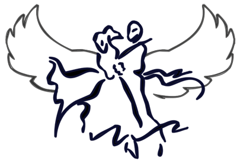

Dances With Owls
Dances With Owls is an annual ballroom & social dance competition hosted by the Rice Ballroom Club (formerly, the Rice Social Dance Society).
Look for the latest information about upcoming competitions on the Rice Ballroom Club website. This page is preserved as an archive for posterity.
| 2016 | Results |
| 2015 | Videos / Results |
| 2014 | Videos / Results |
| 2013 | Rulebook / Results |
| 2012 | Info / Results |
| 2011 | Info / Results |
| 2010 | Info / Results |
| 2009 | Info / Events / Results |
| 2008 | Info / Events / Program / Results |
Maintained by Michael Rog (WRC '10)